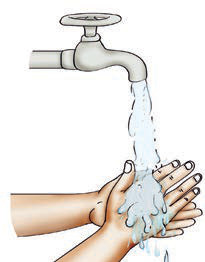
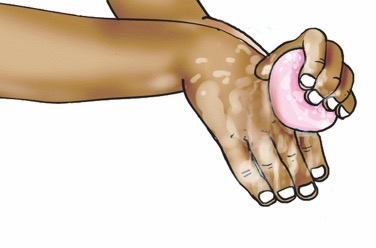
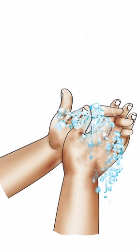
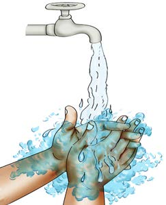
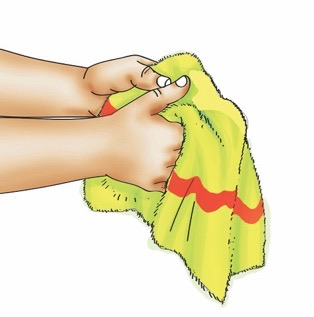

Ninasafisha mikono yangu.
Paka wa katuni anaelekeza kufuata hatua za kunawa mikono.

Ninasafisha mikono yangu kwa kufuata hatua hizi.
1
Nalowanisha mikono kwa maji.

2
Napaka sabuni mikono yangu.

3
Ninasugua mikono.

4
Nasuuza mikono.

5
Nakausha mikono kwa taulo safi.

Maswali
1.Umejifunza nini katika picha 1–5 / umebaini nini katika maelezo ya hatua za kusafisha mikono?
2.Kwa nini ni muhimu kusafisha mikono yako?